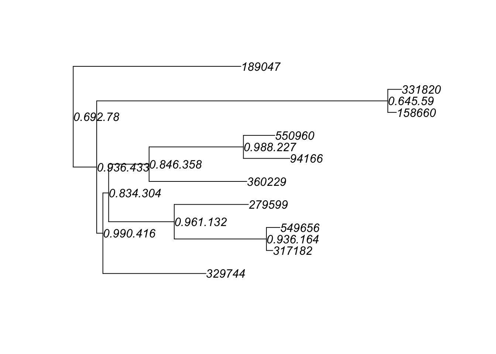
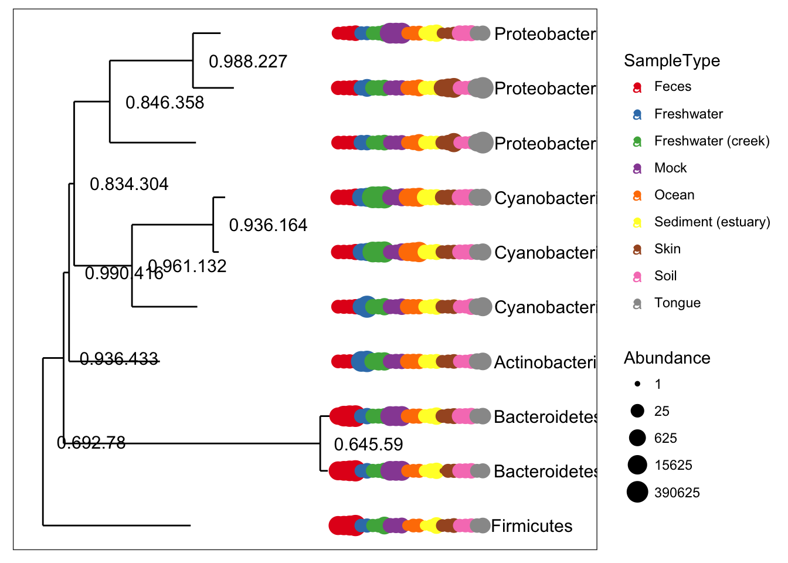
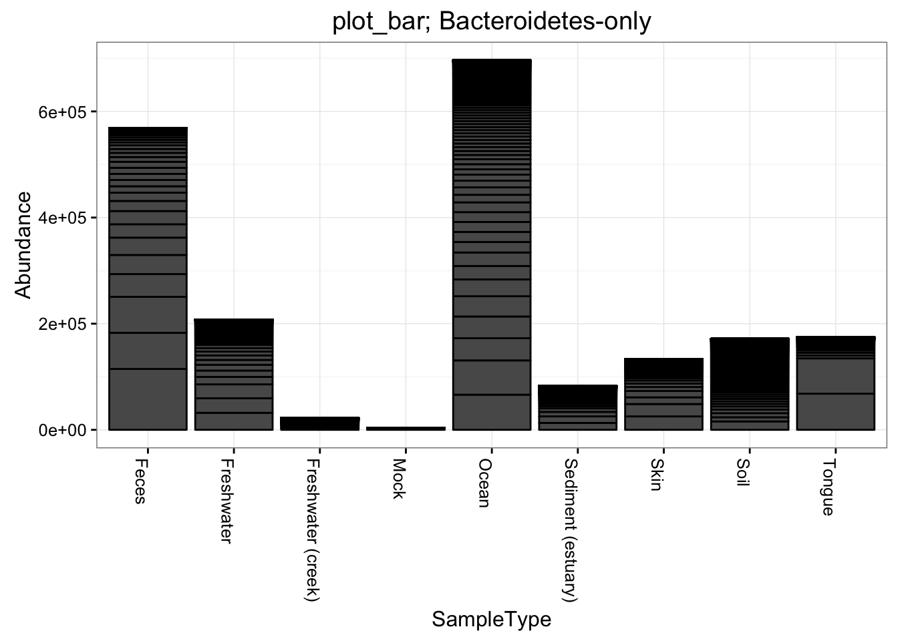
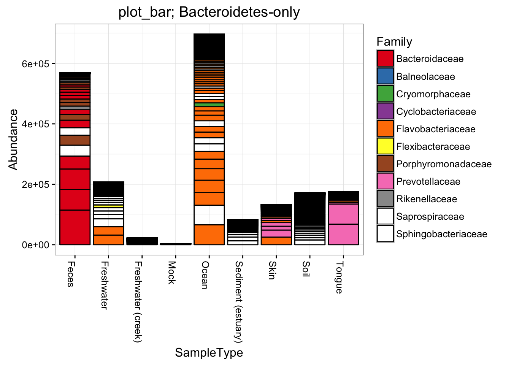
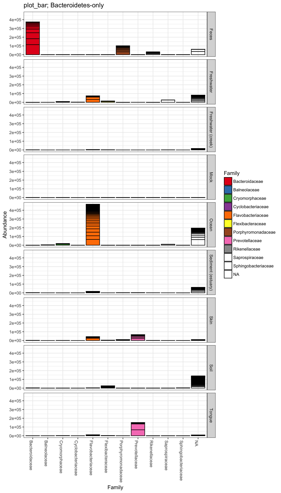

library(phyloseq)For completeness, here is the version number of phyloseq used to build this instance of the tutorial – and also how you can check your own current version from the command line.
packageVersion("phyloseq")## [1] '1.16.2'Load the GlobalPatterns dataset, included with the phyloseq package.
data("GlobalPatterns")Components of a phyloseq object, like the OTU Table, can be accessed by special accessor functions, or ``accessors’’, which return specific information about phylogenetic sequencing data, if present. These accessor functions are available for direct interaction by users and dependent functions/packages.
GlobalPatterns## phyloseq-class experiment-level object
## otu_table() OTU Table: [ 19216 taxa and 26 samples ]
## sample_data() Sample Data: [ 26 samples by 7 sample variables ]
## tax_table() Taxonomy Table: [ 19216 taxa by 7 taxonomic ranks ]
## phy_tree() Phylogenetic Tree: [ 19216 tips and 19215 internal nodes ]ntaxa(GlobalPatterns)## [1] 19216nsamples(GlobalPatterns)## [1] 26sample_names(GlobalPatterns)[1:5]## [1] "CL3" "CC1" "SV1" "M31Fcsw" "M11Fcsw"rank_names(GlobalPatterns)## [1] "Kingdom" "Phylum" "Class" "Order" "Family" "Genus" "Species"sample_variables(GlobalPatterns)## [1] "X.SampleID" "Primer"
## [3] "Final_Barcode" "Barcode_truncated_plus_T"
## [5] "Barcode_full_length" "SampleType"
## [7] "Description"otu_table(GlobalPatterns)[1:5, 1:5]## OTU Table: [5 taxa and 5 samples]
## taxa are rows
## CL3 CC1 SV1 M31Fcsw M11Fcsw
## 549322 0 0 0 0 0
## 522457 0 0 0 0 0
## 951 0 0 0 0 0
## 244423 0 0 0 0 0
## 586076 0 0 0 0 0tax_table(GlobalPatterns)[1:5, 1:4]## Taxonomy Table: [5 taxa by 4 taxonomic ranks]:
## Kingdom Phylum Class Order
## 549322 "Archaea" "Crenarchaeota" "Thermoprotei" NA
## 522457 "Archaea" "Crenarchaeota" "Thermoprotei" NA
## 951 "Archaea" "Crenarchaeota" "Thermoprotei" "Sulfolobales"
## 244423 "Archaea" "Crenarchaeota" "Sd-NA" NA
## 586076 "Archaea" "Crenarchaeota" "Sd-NA" NAphy_tree(GlobalPatterns)##
## Phylogenetic tree with 19216 tips and 19215 internal nodes.
##
## Tip labels:
## 549322, 522457, 951, 244423, 586076, 246140, ...
## Node labels:
## , 0.858.4, 1.000.154, 0.764.3, 0.995.2, 1.000.2, ...
##
## Rooted; includes branch lengths.taxa_names(GlobalPatterns)[1:10]## [1] "549322" "522457" "951" "244423" "586076" "246140" "143239"
## [8] "244960" "255340" "144887"myTaxa = names(sort(taxa_sums(GlobalPatterns), decreasing = TRUE)[1:10])
ex1 = prune_taxa(myTaxa, GlobalPatterns)
plot(phy_tree(ex1), show.node.label = TRUE)
plot_tree(ex1, color = "SampleType", label.tips = "Phylum", ladderize = "left", justify = "left" , size = "Abundance")
The phyloseq package also includes functions for filtering, subsetting, and merging abundance data. Filtering in phyloseq is designed in a modular fashion similar to the approach in the genefilter package. This includes the prune_taxa and prune_samples methods for directly removing unwanted indices, as well as the filterfun_sample and genefilter_sample functions for building arbitrarily complex sample-wise filtering criteria, and the filter_taxa function for taxa-wise filtering. In the following example, the GlobalPatterns data is first transformed to relative abundance, creating the new GPr object, which is then filtered such that only OTUs with a mean greater than 10^-5 are kept.
GPr = transform_sample_counts(GlobalPatterns, function(x) x / sum(x) )
GPfr = filter_taxa(GPr, function(x) mean(x) > 1e-5, TRUE)This results in a highly-subsetted object, GPfr, containing just 4624 of the original ~19216 OTUs. Note that in both lines we have provided a custom function for transformation and filtering, respectively.
The subsetting methods prune_taxa and prune_samples are for cases where the complete subset of desired OTUs or samples is directly available. Alternatively, the subset_taxa and subset_samples functions are for subsetting based on auxiliary data contained in the Taxonomy Table or Sample Data components, respectively. These functions are analogous to the subset function in core R, in which the initial data argument is followed by an arbitrary logical expression that indicates elements or rows to keep. Thus, entire experiment-level data objects can be subset according to conditional expressions regarding the auxiliary data. For example, the following code will first assign to GP.chl the subset of the GlobalPatterns dataset that are part of the Chlamydiae phylum, and then remove samples with less than 20 total reads.
GP.chl = subset_taxa(GlobalPatterns, Phylum=="Chlamydiae")
GP.chl = prune_samples(sample_sums(GP.chl)>=20, GP.chl)Merging methods include merge_taxa and merge_samples, intended for merging specific OTUs or samples, respectively. There is also the merge_phyloseq function for a complete merge of two or more phyloseq-objects (or a phyloseq-object and one or more separate components). For example, the following code merges the first 5 OTUs in the Chlamydiae-only dataset.
GP.chl.merged = merge_taxa(GP.chl, taxa_names(GP.chl)[1:5])Building on the merge_taxa methods, the phyloseq-package includes the agglomeration functions, tip_glom and tax_glom, for merging all OTUs in an experiment that are similar beyond a phylogenetic or taxonomic threshold, respectively. The following code demonstrates how to agglomerate the “Bacteroidetes-only” dataset (called gpsfb) at the taxonomic rank of Family, and create an annotated tree of the result.
gpsfbg = tax_glom(gpsfb, "Family")
plot_tree(gpsfbg, color="SampleType", shape="Class", size="abundance")For transforming abundance values by an arbitrary R function, phyloseq includes the transform_sample_counts function. It takes as arguments a phyloseq-object and an R function, and returns a phyloseq-object in which the abundance values have been transformed, sample-wise, according to the transformations specified by the function. For example, the following command transforms GP.chl abundance counts to fractional abundance.
transform_sample_counts(GP.chl, function(OTU) OTU/sum(OTU) )Finally, the following is the remaining set of preprocessing steps that was applied to the GlobalPatterns OTU counts prior to creating the figures in the main phyloseq manuscript.
Remove taxa not seen more than 3 times in at least 20% of the samples. This protects against an OTU with small mean & trivially large C.V.
GP = filter_taxa(GlobalPatterns, function(x) sum(x > 3) > (0.2*length(x)), TRUE)Define a human versus non-human categorical variable, and add this new variable to sample data:
sample_data(GP)$human = factor( get_variable(GP, "SampleType") %in% c("Feces", "Mock", "Skin", "Tongue") )Standardize abundances to the median sequencing depth
total = median(sample_sums(GP))
standf = function(x, t=total) round(t * (x / sum(x)))
gps = transform_sample_counts(GP, standf)Filter the taxa using a cutoff of 3.0 for the Coefficient of Variation
gpsf = filter_taxa(gps, function(x) sd(x)/mean(x) > 3.0, TRUE)Subset the data to Bacteroidetes, used in some plots
gpsfb = subset_taxa(gpsf, Phylum=="Bacteroidetes")Now let’s summarize this slice of the data with some graphics.
title = "plot_bar; Bacteroidetes-only"
plot_bar(gpsfb, "SampleType", "Abundance", title=title)
plot_bar(gpsfb, "SampleType", "Abundance", "Family", title=title)## Warning in RColorBrewer::brewer.pal(n, pal): n too large, allowed maximum for palette Set1 is 9
## Returning the palette you asked for with that many colors
## Warning in RColorBrewer::brewer.pal(n, pal): n too large, allowed maximum for palette Set1 is 9
## Returning the palette you asked for with that many colors
plot_bar(gpsfb, "Family", "Abundance", "Family",
title=title, facet_grid="SampleType~.")## Warning in RColorBrewer::brewer.pal(n, pal): n too large, allowed maximum for palette Set1 is 9
## Returning the palette you asked for with that many colors
## Warning in RColorBrewer::brewer.pal(n, pal): n too large, allowed maximum for palette Set1 is 9
## Returning the palette you asked for with that many colors